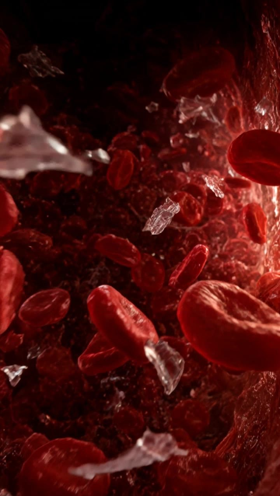
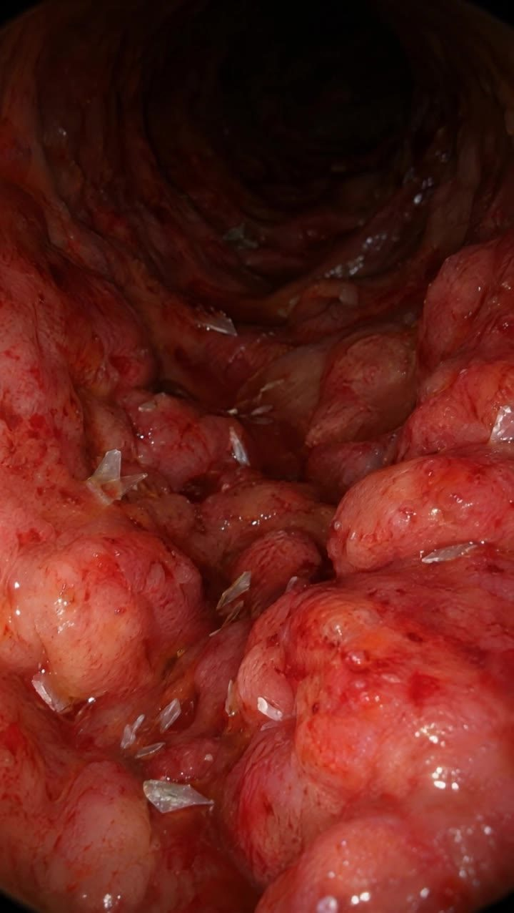
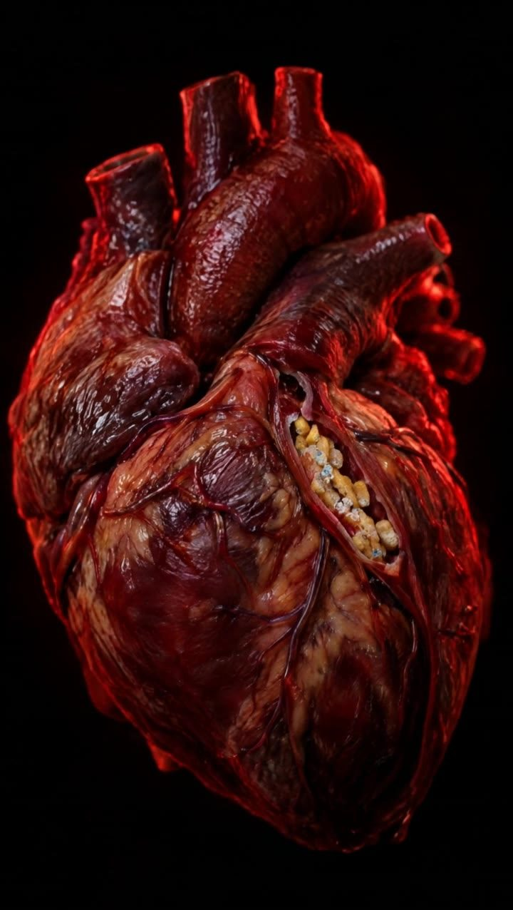

Your blood
Plastic particles turned up in the blood of 17 of 22 healthy adults tested.
Leslie et al., Environment International, 2022
Coffee pods for Keurig® brewers
One coffee. Nothing else.
Most K-Cup® pods are made of plastic, and every morning near-boiling water runs straight through one. Ours have none. Same coffee, nothing extra.

What's in a plastic pod's cup
13,000,000
plastic particles, in a single cup.1
Plastic sheds when it gets hot. Researchers who heated polypropylene, the plastic most pods are made of, counted millions of particles released per liter. Your brewer runs water at about 192°F through the pod every morning.
1. Estimate for an 8 oz cup, scaled from Li et al., Nature Food 2020, which measured up to 55 million particles per liter from polypropylene at 95°C (203°F).

Plastic particles turned up in the blood of 17 of 22 healthy adults tested.
Leslie et al., Environment International, 2022
Human brain samples from 2024 held about 50% more plastic than samples from 2016.
Nihart et al., Nature Medicine, 2025

Microplastics have been linked to gut inflammation in lab studies.*
*Animal studies. See sources.

People with plastic in their artery plaque had a higher risk of heart attack, stroke or death.*
*Marfella et al., NEJM, 2024. An association, not proven cause.
Every. Single. Morning.
Twelve pods to a box. Zero plastic in the pod, the lid or the filter.
The research
Most single-serve coffee pods are made of polypropylene, a plastic labeled #5. Every brew pushes water at roughly 192°F through it under pressure. Heat is exactly what makes plastic shed.
In 2020, researchers at Trinity College Dublin heated polypropylene baby bottles the way parents prepare formula. At 95°C (203°F), the bottles released up to 55 million plastic particles per liter.1 Scaled to an 8 oz cup, that's about 13 million particles. Pods weren't part of that study, so treat that number as an estimate of what hot polypropylene can do.
Plastic particles have been found in the blood of 17 of 22 healthy adult donors.2 Human brain tissue collected in 2024 held about 50% more plastic than tissue from 2016.3 In a 2024 study of people having surgery to clear their neck arteries, those whose plaque contained plastic had about 4.5 times the risk of heart attack, stroke or death over the following three years.4 That study shows an association, not that the plastic caused it.
Lab studies in mice have linked microplastics to gut inflammation and to changes in behavior and memory.5 We don't know yet whether the same happens in people.
We can't take plastic out of the world. We can take it out of your morning cup. Our pods have no plastic in the cup, the lid or the filter, so the hot water only touches coffee.
This page is for general information and isn't medical advice.
Questions at the counter
They're made for Keurig® K-Cup® pod brewers. Drop one in and brew as usual. They aren't made for Keurig K-Rounds® brewers.
None in the pod, the lid or the filter. That's the whole point of the company.
We like 8 oz for the fullest flavor. 10 oz works if you like it lighter.
Pick a roast and how often you want it: every 2, 4 or 6 weeks. You save 10% on every delivery and can skip or cancel anytime by replying to your order email.
Free on orders over $35. Otherwise Standard is $5.95 (5 to 7 business days) and Express is $12.95 (2 to 3 business days).
Anywhere in the United States for now.
Reply to any order email and a real person will get back to you.